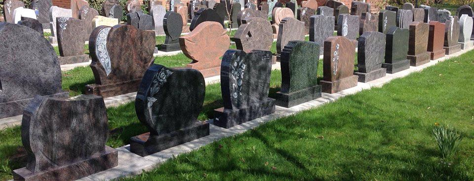
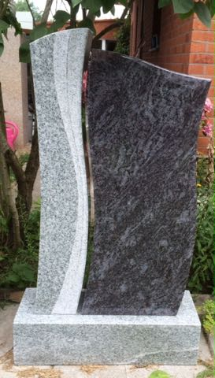
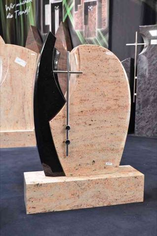
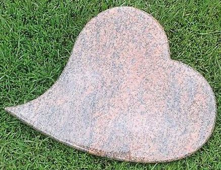
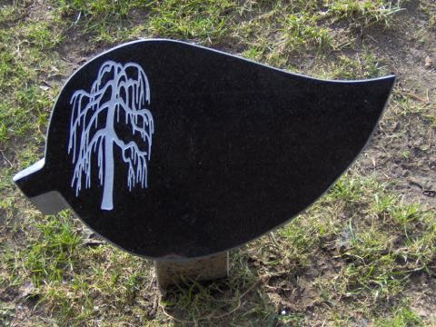

Steinmetz in Lehsen bei Wittenburg
Grabmale, die bleiben.
Ein Grabmal ist ein Zeichen der Erinnerung – persönlich, würdevoll und für Generationen gemacht. Wir begleiten Sie mit Erfahrung, Ruhe und einer vielseitigen Ausstellung.

Willkommen
Mein kleines, aber feines Unternehmen
In Lehsen finden Sie mein kleines, aber feines Unternehmen. Bei mir stehen Sie und Ihre Wünsche im Mittelpunkt – von der ersten Idee bis zum fertig aufgestellten Grabmal.
Ich freue mich auf ein Beratungsgespräch mit Ihnen. Damit ich mir ausreichend Zeit nehmen kann, sind Terminabsprachen wünschenswert.
Ihr Bernhard Gerdes
- Fachliche KompetenzErfahrung in Gestaltung, Schrift und Fertigung.
- Vielseitige AusstellungZahlreiche Grabmale und Materialien vor Ort ansehen.
- Seriöse BeratungFreundlich, ehrlich und ohne Zeitdruck.
- Faire PreiseTransparente Angebote ohne versteckte Kosten.
- Flexible TermineAuch abends und samstags.
Unser Angebot
Grabmale für jede Grabstätte
Vom klassischen Breitstein bis zur kompletten Grabanlage – entdecken Sie Beispiele aus unserer Arbeit.

Breitsteine
Das klassische Grabmal für Doppelgrabstellen.
Ansehen →
Reihensteine
Das persönliche Zeichen für die Einzelgrabstelle.
Ansehen →
Stelen
Eines der ältesten Grabzeichen – heute wieder gefragt.
Ansehen →
Liegesteine
Schlicht, pflegeleicht und ideal für Urnengräber.
Ansehen →
Grabanlagen
Einfassung, Abdeckung und Zubehör aus einer Hand.
Ansehen →

Online-Shop
Liegesteine & Grabherzen – auch online bestellen
Viele unserer Liege- und Rasensteine, Grabherzen und Urnengrab-Einfassungen können Sie auch bequem über unseren eBay-Shop bestellen – mit Ihrer persönlichen Inschrift und Ihrem Wunschsymbol, gefertigt in unserer Werkstatt in Lehsen.
- über 6.300verkaufte Artikel
- 100 %positive Bewertungen
Der Link führt zu eBay. Dort gelten die Datenschutzbestimmungen von eBay.
Ablauf
So entsteht Ihr Grabmal
Wir begleiten Sie Schritt für Schritt und nehmen Ihnen dabei so viel wie möglich ab.
Beratung
In Ruhe und ohne Zeitdruck – in unserer Ausstellung in Lehsen, gern auch abends oder samstags.
Entwurf
Wir stimmen Stein, Form, Schrift und Ornamente mit Ihnen ab und beachten die Friedhofssatzung.
Fertigung
Ihr Grabmal wird sorgfältig gefertigt und beschriftet – vertieft, erhaben oder mit aufgesetzter Schrift.
Aufstellung
Wir kümmern uns um die Genehmigung und stellen das Grabmal fachgerecht auf dem Friedhof auf.
Gut zu wissen: die Friedhofssatzung
Jeder Friedhof hat eigene Vorgaben der Kommune oder Kirche – etwa zu Größe, Material und Bearbeitung des Grabsteines. Wir kennen die Satzungen der Friedhöfe in der Region und berücksichtigen sie von Anfang an.
Nachbeschriftung & Zubehör
Auch für bestehende Grabmale sind wir für Sie da: Nachbeschriftungen, Ornamente, Grablichter, Grabvasen und weiteres Zubehör.
Lassen Sie sich persönlich beraten
Vereinbaren Sie einen Termin in unserer Ausstellung – auch abends und samstags.